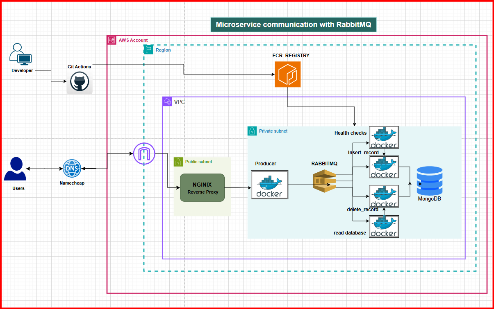

Microservice Architecture Diagram

Comprehensive architecture diagram showing the flow between components
Diagram Components
Microservices
- Health Check Service: Monitors system health
- Insert Record Service: Handles data insertion
- Read Database Service: Retrieves data
- Delete Record Service: Manages data deletion
RabbitMQ Queues
- health_check: System health monitoring
- insert_record: Database insertion queue
- read_database: Data retrieval queue
- send_database: Data transmission queue